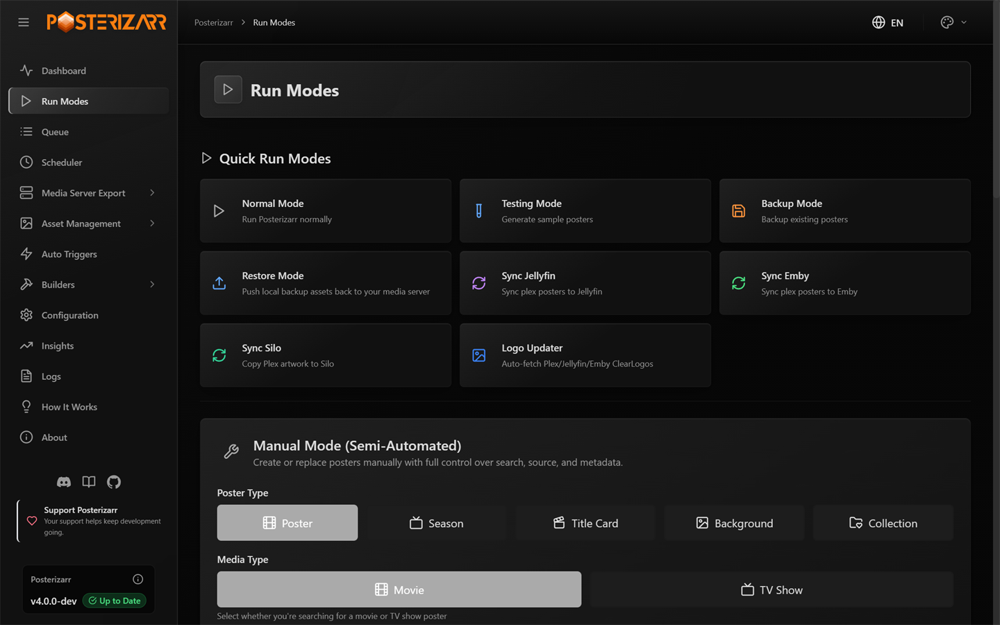
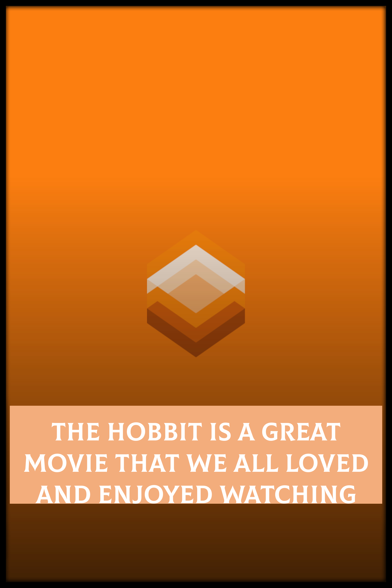
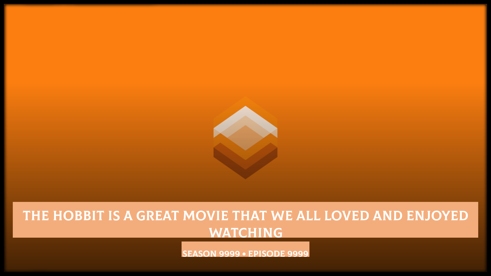
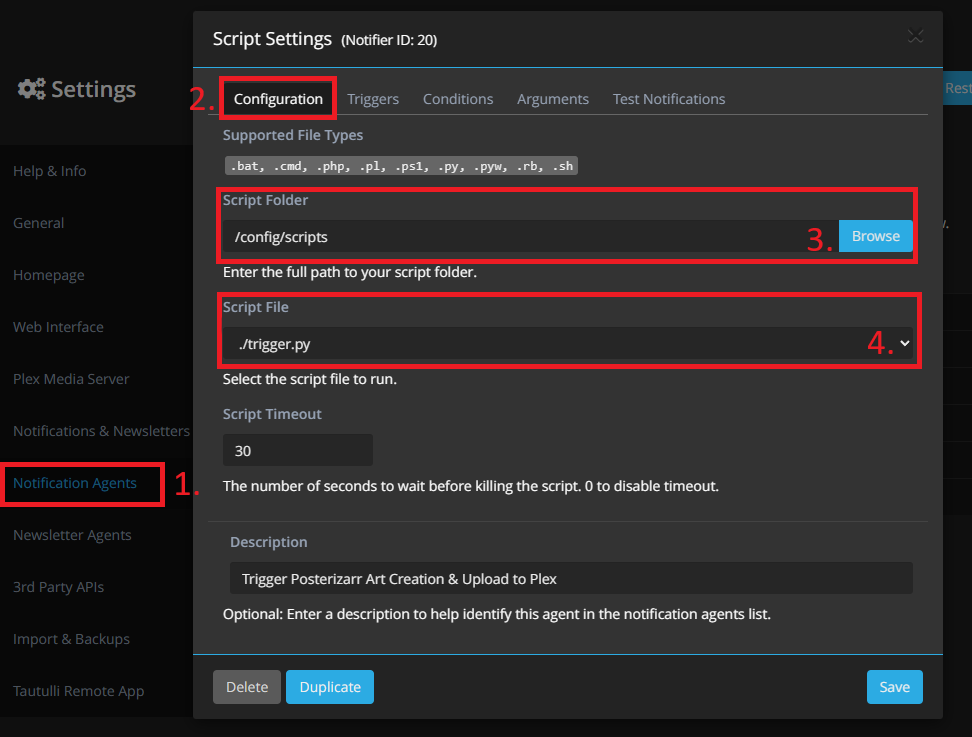
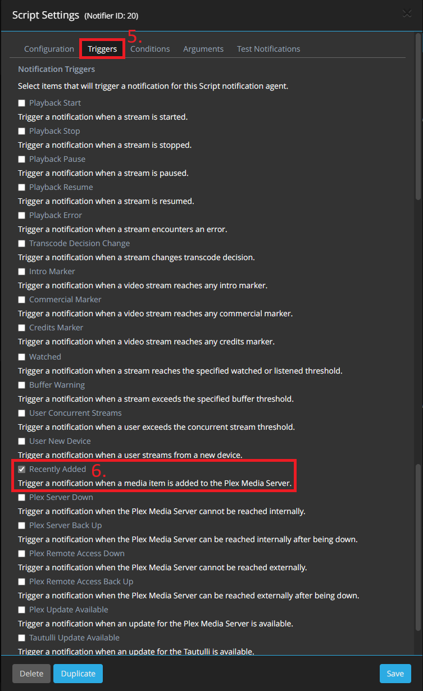
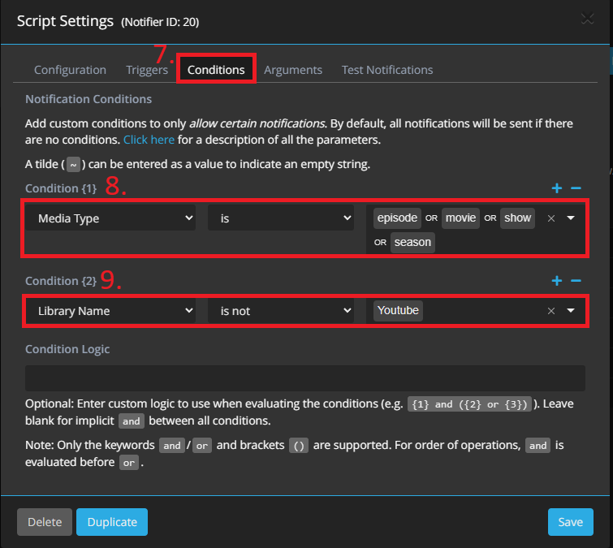
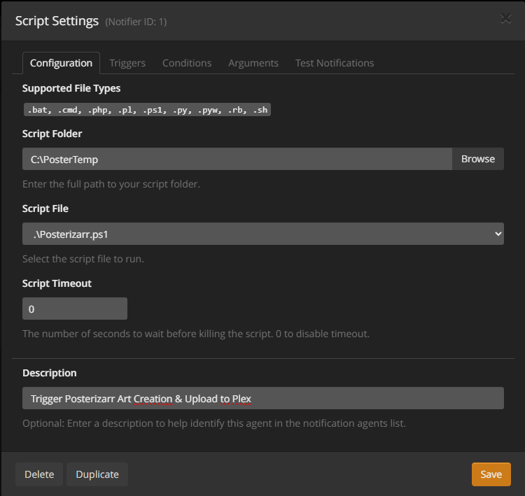
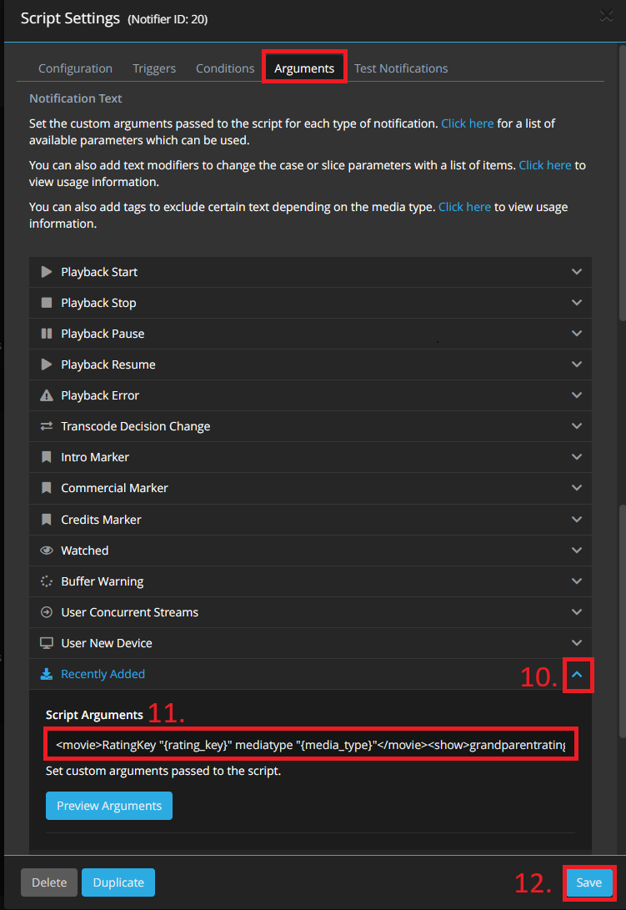

Run Modes and Automation
Posterizarr is designed to be operated from the Web UI. You do not need a terminal or PowerShell for the normal artwork workflow. Open Run Modes from the left sidebar to run, test, back up, restore, sync, or create one asset.

Choose Run Modes in the left sidebar. Quick Run cards start common jobs; the manual form below creates or replaces one asset.
Quick Run modes
Quick Run cards are at the top of Run Modes. If a confirmation dialog opens, review it before starting. You can choose Don't show this again in supported dialogs; use Reset Prompts at the top of Quick Run to show them again. Only one script run can be active at a time. While one is running, its status and a Stop button appear on the page.
Normal Mode
Choose Normal Mode to process the libraries and artwork types selected in your configuration. Review the confirmation dialog, especially the target server, enabled libraries, upload behavior, and asset cleanup settings, then start the run. Use Testing Mode first if you have changed styling or blueprints and want sample output before a library run.
Testing Mode
- In Run Modes > Quick Run, choose Testing Mode.
- Confirm that the dialog says no artwork will be uploaded to Plex, Jellyfin, or Emby. The generated examples use your current asset styling and settings.
- Choose Start Test Run, or Start & Go to Gallery to open the results automatically when generation finishes.
- Review the samples in Test Gallery in the sidebar. The confirmation dialog also lets you set automatic redirection for future test runs.
Testing Mode is for checking generated artwork. It is separate from Dynamic Overlays > Dry Run, which tests overlay rules and renders their changes without uploading them.
The examples below are current Testing Mode outputs from the supplied test set. They show how short, medium, long, and uppercase text affect each artwork type. Open the full Artwork Showcase for additional formats and real media-server examples.


Backup Mode
Choose Backup Mode to copy existing media-server artwork into the configured backup location. Confirm the destination and start the backup. This preserves a local copy for recovery; it does not generate new artwork.
Restore Mode
Choose Restore Mode to upload artwork from the local backup folder back to your media server. In the dialog, choose Restore All Libraries or Restore Specific Items. The specific-item filters can narrow by library, folder/item name, and asset type. Restoring all libraries can affect a large part of your server, so select a narrow target when you only need one item. Restored images are uploaded as saved; this step does not run them through the current overlay or artwork styling configuration.
Sync Jellyfin, Emby, or Silo
Use the Jellyfin or Emby sync card to copy artwork from Plex to the selected server. Review the confirmation details first. Library names must match exactly between the source and target servers. Silo has its own Sync Silo action and limitations; see the Silo notes.
Logo Updater
Choose Logo Updater to fetch or manage logos for one library or all suitable libraries. The dialog offers Browse for a single library, Process All Libraries, Only Replace Non-Posterizarr Logos (EXIF Check), Force Replace, and Revert. Force Replace may overwrite existing logos; Revert removes logos previously added by Posterizarr. Review those switches before starting.
Reset Posters
Enter the exact library name in the Reset Posters section and choose Reset. Posterizarr asks for confirmation before replacing selected posters with the media server's available default artwork. This changes live server artwork and cannot be undone by Posterizarr; make a backup first if you may want to restore the current images.
Create one asset manually
Use the Manual form below the Quick Run cards when you want to make or replace one item without processing a full library:
- Choose the output type: poster, season poster, titlecard, background, or collection poster. For standard posters and backgrounds, also choose movie or TV show.
- Search by title and year in the built-in provider search, then select an image. Or upload your own image or provide an image URL/path.
- Choose the library and item. Use Select Library and Select Folder to browse what the connected server exposes.
- Fill in the type-specific details. Season posters need a season name; titlecards need a season, episode title, and episode number.
- Select a blueprint or keep the global configuration. Review text/textless and title/logo options, then choose Run or Add to Queue.
The Auto-Queue Changes checkbox remembers the queue choice for future manual submissions. It is separate from the queue switch for the current asset.
Schedule and automate
- Use Scheduler in the sidebar to create, edit, enable, or run scheduled jobs. Choose the mode, libraries, asset types where available, and schedule.
- Use Auto Triggers to connect supported Tautulli or Sonarr/Radarr events. The native webhook setup does not require a terminal or a custom script.
- Use Logs to review a run. Return to Run Modes to stop an active run.
Native webhook setup
Tautulli: In Tautulli, open Settings > Notification Agents, add a
Webhook, and enter http://YOUR_POSTERIZARR_HOST:8000/api/webhook/tautulli?api_key=YOUR_API_KEY.
Set the method to POST, enable Recently Added, and provide the JSON data
for rating key and media type. Create the API key in Posterizarr's Web UI
configuration.
Sonarr or Radarr: Open Settings > Connect, add a Webhook, and enter
http://YOUR_POSTERIZARR_HOST:8000/api/webhook/arr?api_key=YOUR_API_KEY. Enable
On Import and On Upgrade, set the method to POST, then save. No script
file or shared container volume is needed for the native webhook.
See the Tautulli and Sonarr/Radarr setup notes for the external-app steps.
CLI and legacy instructions (optional)
The commands below are not required when using the Web UI. Expand this section only if you intentionally run Posterizarr from PowerShell, Docker exec, or an older script-based trigger integration.
Optional PowerShell, Docker, and legacy trigger commands
Automatic Mode
Run the script without any parameters:
On docker this way:
This will generate posters for your entire Plex library based on the configured settings.
The posters are all placed in AssetPath\.... This can then be mounted in Kometa to use as the assets folder.
Testing Mode
Run the script with the -Testing flag. In this mode, the script will create pink posters/backgrounds with short, medium, and long texts (also in CAPS), using the values specified in the config.json file.
These test images are placed in the script root under the ./test folder.
Tip
This is handy for testing your configuration before applying it en masse to the actual posters. You can see how and where the text would be applied, as well as the size of the textbox.
On docker this way:
Manual Mode (Interactive)
Warning
Source picture gets edited by script and is then moved to desired asset location.
Run the script with the -Manual switch and add the desired extra switch for which poster you want to create -MoviePosterCard or -ShowPosterCard or-SeasonPoster or -CollectionCard or -BackgroundCard or -TitleCard
On docker this way:
Follow the prompts to enter the source picture path (Container needs Access to it), media folder name, and movie/show title to manually create a custom poster.
Posterizarr Input Prompts
Enter local path or URL to source picture:
- Paste the image URL or provide the full local path to the image file you want to use as the poster source. This is the image that Posterizarr will base the new poster on.
Enter Media Folder Name (as seen by Plex):
- The name of the local movie or show folder where the .mkv (or other media) file is stored. This should match the folder structure Plex recognizes.
Enter Movie/Show/Collection Title:
- The title that will be displayed on the generated poster.
Create Season Poster? (y/n):
- Type
yif you're generating a season poster, otherwisen.
Create TitleCard? (y/n):
- Type
yif you also want to create a title card, otherwisen.
Create Collection Poster? (y/n):
- Type
yif you're generating a collection poster, otherwisen.
Enter Plex Library Name:
- Enter the name of the Plex (or Jellyfin) library, e.g., "Movies" or "TV Shows".
Enter Title Text:
- Enter the Title of the asset e.g., "Avatar".
Enter Season Name:
- Enter the Title of the asset e.g., "Season 1".
- If you want to add Custom Text to Season poster please enter it via prefix
Title | Season 1
Manual Mode (Semi Automated)
Warning
The source picture is moved (if local) or downloaded (if a URL - and moved), then edited and placed in the desired asset location. The -PicturePath parameter can accept either a local file path or a direct URL to an image.
Example on Windows:
-PicturePath "C:\path\to\movie_bg.jpg"
Example on Docker:
-PicturePath "/path/to/movie_bg.jpg"
Example with URL:
-PicturePath "https://posterurl.here/movie_bg.jpg"
Movie or Show Poster
To create a standard poster for a movie or a TV show's main entry:
.\Posterizarr.ps1 -Manual -PicturePath "C:\path\to\movie_bg.jpg" -Titletext "The Martian" -FolderName "The Martian (2015)" -LibraryName "Movies"
On docker this way:
docker exec -it posterizarr pwsh /app/Posterizarr.ps1 -Manual -PicturePath "/path/to/movie_bg.jpg" -Titletext "The Martian" -FolderName "The Martian (2015)" -LibraryName "Movies"
Season Poster
Note
Any season name ending in 0 or 00 (e.g., "Season 0", "Staffel 00") or matching a keyword like "Specials" will be handled as a Specials season.
If you want to add Custom Text to Season poster please enter it via prefix Title | Season 01 in -SeasonPosterName
To create a poster for a specific season of a TV show, use the -SeasonPoster switch and provide the season name:
.\Posterizarr.ps1 -Manual -SeasonPoster -PicturePath "C:\path\to\show_bg.jpg" -Titletext "The Mandalorian" -FolderName "The Mandalorian (2019)" -LibraryName "TV Shows" -SeasonPosterName "Season 1"
On docker this way:
docker exec -it posterizarr pwsh /app/Posterizarr.ps1 -Manual -SeasonPoster -PicturePath "/path/to/show_bg.jpg" -Titletext "The Mandalorian" -FolderName "The Mandalorian (2019)" -LibraryName "TV Shows" -SeasonPosterName "Season 1"
Collection Poster
To create a poster for a media collection, use the -CollectionCard switch. The script will use the -Titletext for both the poster text and the folder name.
.\Posterizarr.ps1 -Manual -CollectionCard -PicturePath "C:\path\to\collection_bg.jpg" -Titletext "James Bond" -LibraryName "Movies"
On docker this way:
docker exec -it posterizarr pwsh /app/Posterizarr.ps1 -Manual -CollectionCard -PicturePath "/path/to/collection_bg.jpg" -Titletext "James Bond" -LibraryName "Movies"
Background Poster
To create a standard background poster for a movie or a TV show's main entry:
.\Posterizarr.ps1 -Manual -BackgroundCard -PicturePath "C:\path\to\movie_bg.jpg" -Titletext "The Martian" -FolderName "The Martian (2015)" -LibraryName "Movies"
On docker this way:
docker exec -it posterizarr pwsh /app/Posterizarr.ps1 -Manual -BackgroundCard -PicturePath "/path/to/movie_bg.jpg" -Titletext "The Martian" -FolderName "The Martian (2015)" -LibraryName "Movies"
Episode Title Card
To create a 16:9 title card for a specific episode, use the -TitleCard switch and provide episode details:
.\Posterizarr.ps1 -Manual -TitleCard -PicturePath "C:\path\to\episode_bg.jpg" -FolderName "Breaking Bad (2008)" -LibraryName "TV Shows" -EPTitleName "Ozymandias" -SeasonPosterName "Season 5" -EpisodeNumber "14"
On docker this way:
docker exec -it posterizarr pwsh /app/Posterizarr.ps1 -Manual -TitleCard -PicturePath "/path/to/episode_bg.jpg" -FolderName "Breaking Bad (2008)" -LibraryName "TV Shows" -EPTitleName "Ozymandias" -SeasonPosterName "Season 5" -EpisodeNumber "14"
Backup Mode
Run the script with the -Backup flag. In this mode, the script will download every artwork you have in your mediaserver, using the values specified in the config.json file.
Tip
This is handy for creating a backup or if you want an second assetfolder with kometa/tcm EXIF data for jellyfin/emby.
On docker this way:
Restore Mode
Run the script with the -Restore flag. In this mode, the script will push all artwork from your local backup folder to your media server (Plex, Jellyfin, or Emby).
Tip
This is handy for quickly recreating your library posters after a crash, or if you prefer to edit assets in bulk locally and then push them.
Warning
Running this command directly without any additional flags will automatically attempt to restore ALL assets for ALL items across ALL your included libraries. To prevent this, use the targeted restore flags below.
On docker this way:
Targeted Restore You can filter what gets restored using additional flags. These flags can be used independently or combined together. For example, you don't need to specify the library or type if you only want to restore one specific item.
-RestoreType(options:poster,background,season,episode,titlecard)-RestoreLibrary(e.g."Movies")-RestoreItem(Accepts the exact Media Title, the Original Title, OR the exact Root Folder name!)
Examples:
Restore only the posters for a specific movie using its exact folder name:
Restore all artwork types for a specific show using its title:
Restore only backgrounds for an entire library:
Poster reset Mode
Run the script with the -PosterReset -LibraryToReset "Test Lib" flag. In this mode, posterizarr will reset every artwork from a specifc plex lib.
On docker this way:
Tip
Note: This operation does not delete any artwork. It simply sets each item's poster to the first available poster from Plex’s metadata. This action cannot be undone, so proceed with caution.
Sync Modes
Exact Match
The script requires that library names in Plex and Emby/Jellyfin match exactly for the sync to work. It calculates the hash of the artwork from both servers to determine if there are differences, and only syncs the artwork if the hashes do not match.
Jellyfin
Run the script with the -SyncJelly flag. In this mode, the script will sync every artwork you have in plex to jellyfin.
On docker this way:
Emby
Run the script with the -SyncEmby flag. In this mode, the script will sync every artwork you have in plex to emby.
On docker this way:
Tip
This is handy if you want to run the sync after a kometa run, then you have kometa ovlerayed images in jelly/emby
Tautulli Mode Docker
Warning
Tautulli and Posterizarr must run as a container in Docker
Note
If Discord is configured it will send a Notification on each trigger.
Direct Upload Enforced in Trigger Modes
Tautulli Mode always forces direct upload to Plex (Upload2Plex = true), regardless of whether PlexUpload is set to false in your config.json. The purpose of real-time triggers is to immediately style newly added media in Plex the moment it is imported, without waiting for your next scheduled run. If you use Kometa and want zero uploads from Posterizarr before Kometa applies overlays, do not configure Tautulli triggers; schedule regular Posterizarr batch runs before your Kometa schedule instead.
This mode lets Tautulli trigger Posterizarr for a specific Plex item, such as a newly added show, movie, or episode.
For the legacy script-based setup, configure a script in Tautulli as follows.
- Make sure that you mount the
Posterizarrdirectory to tautulli, cause the script needs the Path/posterizarr⚠️ Note: The default mount path is case-sensitive and must match exactlyvolumes: - "/opt/appdata/posterizarr:/posterizarr:rw" # Optional: Add additional mounts if running multiple instances # - "/opt/appdata/posterizarr2:/posterizarr2:rw"/posterizarr. If you use custom paths for multiple instances, ensure they are also mounted here. - Download the trigger.py from the GH and place it in the Tautulli Script dir - Tautulli-Wiki
- You may have to set
chmod +xto the file. - Open Tautulli and go to Settings -
NOTIFICATION AGENTS - Click on
Add a new notification agentand selectScript - Specify the script folder where you placed the script and select the script file.
-
Add an optional
Descriptionto identify the script.
-
Go to
Triggers, scroll down and selectRecently Added.
-
Go to
Conditions, you can now specify when the script should get called. - Set Media Type to the types you want to process, for example
episode, movie, show and season. -
Exclude libraries without
tmdb,tvdb, or Fanart IDs, or include only libraries where Posterizarr should create artwork.
-
Next go to Arguments - Unfold
Recently AddedMenu and paste the following Argument, after that you can save it. - Please do not change the Argument otherwise the script could fail.
Default Setup (Single Instance):
If you are using the default /posterizarr mount, paste this:
<movie>RatingKey "{rating_key}" mediatype "{media_type}"</movie><show>RatingKey "{rating_key}" mediatype "{media_type}"</show><season>parentratingkey "{parent_rating_key}" mediatype "{media_type}"</season><episode>RatingKey "{rating_key}" parentratingkey "{parent_rating_key}" grandparentratingkey "{grandparent_rating_key}" mediatype "{media_type}"</episode>
Custom Path Setup (Multiple Instances):
If you are triggering a second Posterizarr instance (e.g., mounted as /posterizarr2), you must use the -p parameter right after each opening tag to define the target watcher directory:
<movie>-p "/posterizarr2/watcher" RatingKey "{rating_key}" mediatype "{media_type}"</movie><show>-p "/posterizarr2/watcher" RatingKey "{rating_key}" mediatype "{media_type}"</show><season>-p "/posterizarr2/watcher" parentratingkey "{parent_rating_key}" mediatype "{media_type}"</season><episode>-p "/posterizarr2/watcher" RatingKey "{rating_key}" parentratingkey "{parent_rating_key}" grandparentratingkey "{grandparent_rating_key}" mediatype "{media_type}"</episode>

Tautulli Mode Windows
Note
If Discord is configured it will send a Notification on each trigger.
This mode lets Tautulli trigger Posterizarr for a specific Plex item, such as a newly added show, movie, or episode.
- Open Tautulli and go to Settings -
NOTIFICATION AGENTS - Click on
Add a new notification agentand selectScript - Specify the script folder of Posterizarr and select the script file.
- Set the script timeout to
0, which is unlimited. (The default is30, which would kill the script before it finishes.) -
Add an optional
Descriptionto identify the script.
-
Go to
Triggers, scroll down and selectRecently Added. -
Go to
Conditions, you can now specify when the script should get called. - Set Media Type to the types you want to process, for example
episode, movie, show and season. -
Exclude libraries without
tmdb,tvdb, or Fanart IDs, or include only libraries where Posterizarr should create artwork. -
Next go to Arguments - Unfold
Recently AddedMenu and paste the following Argument, after that you can save it. - Please do not change the Argument otherwise the script could fail.
<movie>RatingKey "{rating_key}" mediatype "{media_type}"</movie><show>RatingKey "{rating_key}" mediatype "{media_type}"</show><season>parentratingkey "{parent_rating_key}" mediatype "{media_type}"</season><episode>RatingKey "{rating_key}" parentratingkey "{parent_rating_key}" grandparentratingkey "{grandparent_rating_key}" mediatype "{media_type}"</episode>

Tautulli Mode (Native Webhook)
Recommended
This is the easiest way to set up Tautulli. It requires no custom scripts or volume mounts.
- Open Tautulli and go to Settings -> Notification Agents.
- Click
Add a new notification agentand select Webhook. - Configuration Tab:
- Webhook URL:
http://YOUR_POSTERIZARR_IP:8000/api/webhook/tautulli?api_key=YOUR_API_KEY - (Generate an API Key in Posterizarr settings under WebUI)
- Webhook Method:
POST
- Webhook URL:
- Triggers Tab:
- Check
Recently Added.
- Check
- Data Tab:
- Scroll down to Recently Added.
- Paste the following into JSON Data:
- Click Save.
Sonarr/Radarr Mode Docker
Warning
Arrs and Posterizarr must run as a container in Docker
Note
If Discord is configured it will send a Notification on each trigger.
Direct Upload Enforced in Trigger Modes
Arr trigger runs always force direct upload to your media server (Upload2Plex = true / Jellyfin / Emby), regardless of whether PlexUpload is set to false in your config.json.
This mode lets Sonarr or Radarr trigger Posterizarr for a specific Plex or Jellyfin item, such as a newly added show, movie, or episode.
For the legacy script-based setup, configure a script in Sonarr or Radarr as follows.
- Ensure you mount the
Posterizarrdirectory to your Sonarr/Radarr container, as the script requires access to/posterizarr: ⚠️ Note: This mount path is case-sensitive and must match exactly/posterizarr. - Download ArrTrigger.sh from GitHub and place it in your Sonarr/Radarr script directory.
- For example, create a
scriptsfolder in/opt/appdata/sonarr, resulting in the path:/opt/appdata/sonarr/scripts/ArrTrigger.sh - Make sure to set executable permissions:
chmod +x ArrTrigger.sh - In Sonarr/Radarr, go to Settings → Connect.
- Click the
+button and select Custom Script. - Enter a name for the script.
- For Notification Triggers, select only
On File Import. - Under Path, browse to and select your
ArrTrigger.shscript. - Example:
/config/scripts/ArrTrigger.sh - With this setup, the Arr suite will create a file in
/posterizarr/watcherwhenever a file is imported. - The file will be named like:
recently_added_20250925114601966_1da214d7.posterizarr - Posterizarr monitors this directory for files ending in
.posterizarr. - When such a file is detected, it waits up to
5 minutes(based on fileage), then reads the file and triggers a Posterizarr run for the corresponding item.
Sonarr/Radarr Mode (Native Webhook)
Recommended
This method replaces the need for ArrTrigger.sh and works without complex volume mapping.
- Open Sonarr or Radarr.
- Go to Settings -> Connect.
- Click the
+button and select Webhook. - Name: Posterizarr
- On Import: Yes
- On Upgrade: Yes
- URL:
http://YOUR_POSTERIZARR_IP:8000/api/webhook/arr?api_key=YOUR_API_KEY- (Generate an API Key in Posterizarr settings under WebUI)
- Method: POST
- Click Save.
Gather Logs Mode
Run the script with the -GatherLogs flag. In this mode, the script collects logs, rotated logs, and database files into a single archive for troubleshooting.
Crucially, the script sanitizes these files before zipping them automatically masking API keys, tokens, PINs, and sensitive hostnames. The result is saved in the script root as posterizarr_support_<timestamp>.zip
!!! tip Use this when reporting bugs or requesting support. It allows you to share comprehensive debugging information with the developer without manually scrubbing your credentials or private links from the files.
On docker this way:
Logo Updater Mode
The Logo Updater Mode automatically scans your Plex libraries for missing ClearLogos (text-based title images), fetches them from online sources (TMDB, TVDB, Fanart.tv), and uploads them directly to your Plex server metadata.
Standard Update
Revert Mode (Delete Posterizarr-added logos)
Parameters:
-LogoUpdater: Enable the logo search and upload process.-LogoRevert: Search for logos previously added by Posterizarr (verified via fingerprinting) and unlinks them from Plex.-ForceReplace: Overwrite existing logos even if they already exist in Plex.-LogoExifCheck: Only replace existing logos if they lack Posterizarr EXIF metadata (e.g. default logos auto-selected by Plex). Existing logos created or uploaded by Posterizarr are skipped.-LibraryName: Specify a single library name or use"all"to process all suitable Movie and TV libraries.
Tip
Fingerprinting & EXIF Checks: When running with -LogoExifCheck or in Revert mode, Posterizarr inspects the current logo for a metadata comment (created with posterizarr). Using -LogoExifCheck allows you to replace unwanted or wrong-language logos chosen by Plex's default agents while skipping logos Posterizarr already customized in prior runs.
In the WebUI, you can access this mode via the "Run Modes" tab. It provides a user-friendly interface to select libraries and toggle "Force Replace", "Only Replace Non-Posterizarr Logos (EXIF Check)", or "Revert" settings.
Manual Mode Logo Search
In the WebUI's Manual Mode, you can use the "Browse Logos" button to search for ClearLogos/ClearArt directly from online providers.
- Open Manual Mode in the WebUI.
- Click "Browse Logos".
- Search for a movie or show.
- Select a logo to automatically use its URL as the title source.
- When you run the manual mode with a URL in the "Title Text" field, Posterizarr will download and use that image as a logo overlay on your poster.
Plex Sync Mode (WebUI & Scheduler)
The Plex Sync Mode is a dedicated, lightweight synchronization mechanism built directly into Posterizarr's WebUI backend. It allows you to selectively push generated artwork directly to your Plex server without running full PowerShell image generation cycles or triggering external scrapers.
Why Use Plex Sync Mode?
- Lightweight & Fast: Pure Python execution utilizing PMS REST endpoints (
/library/metadata/{rating_key}/postersand/arts). No ImageMagick overhead. - Change Tracking (Zero Redundant Uploads): Maintains an internal SQLite cache (
database/plex_push_cache.db) recording file sizes, modification timestamps, and upload history. Assets that have not changed locally are skipped immediately. - Granular Control (Respects Kometa & Custom Workflows): You can select exactly which libraries (e.g. "Movies", "TV Shows", or "all") and which asset types to sync:
Collections: Collection posters (Assets/Collections/)Posters: Movie and Show main posters (Assets/<Library>/<Item>/poster.*)Seasons: TV Season posters (Assets/<Library>/<Item>/SeasonXX.*)Title Cards: Episode title cards (Assets/<Library>/<Item>/<Item> - SxxExx.*)Backgrounds: Fanart / Backdrops (Assets/<Library>/<Item>/background.*) If you manage movie posters with Kometa or PMM, you can enable Plex Sync exclusively for Collections without touching other media artwork.
Interactive Collection Explorer Diff & Push
Under Collection Builder (/media-server-collections):
1. Select your Plex server and library.
2. The UI automatically compares every local collection poster against the Plex server and labels it with real-time diff tags:
- In Sync: Local poster matches Plex and was previously uploaded.
- Update Ready: Local poster has been updated or edited locally and is ready to push.
- Missing on Plex: Local collection poster exists on disk, but has not yet been pushed to Plex.
- No Local Asset: Collection exists on Plex, but no local poster file was found in Assets/Collections/.
3. Use the LOCAL / SERVER toggle on each card to visually inspect the differences between your local asset and what is currently live on your Plex server.
4. Click Push to Plex on an individual collection card for instant 1-click upload, or click Push All Out-of-Sync in the toolbar to batch upload all pending collections concurrently.
Automated Scheduling
In Scheduler (/scheduler):
1. Select Plex Sync (Lightweight) as the execution mode.
2. Select target library (All Libraries or a specific library).
3. Toggle which asset types to include using the interactive checkboxes.
4. Set your desired interval or cron schedule.
5. All sync activity is logged to UILogs/PlexSync.log and viewable in real-time in the WebUI Log Viewer.
Do not use Plex Sync schedule in combination with Kometa (Plex Meta Manager)!
If you run Kometa to manage posters, titlecards, or overlays, do not schedule a Plex Sync job for those same libraries or asset types.
Because Kometa applies its own overlays and metadata modifications directly to Plex, Posterizarr's Plex Sync will continuously detect that the live Plex artwork differs from your clean local assets and will repeatedly attempt to re-upload them. This triggers an endless overwrite cycle between Kometa and Posterizarr.
If you use Kometa, ensure that Plex Sync is only scheduled for asset types that Kometa does not touch (e.g. custom Collections only), or manage all uploads exclusively through Kometa.